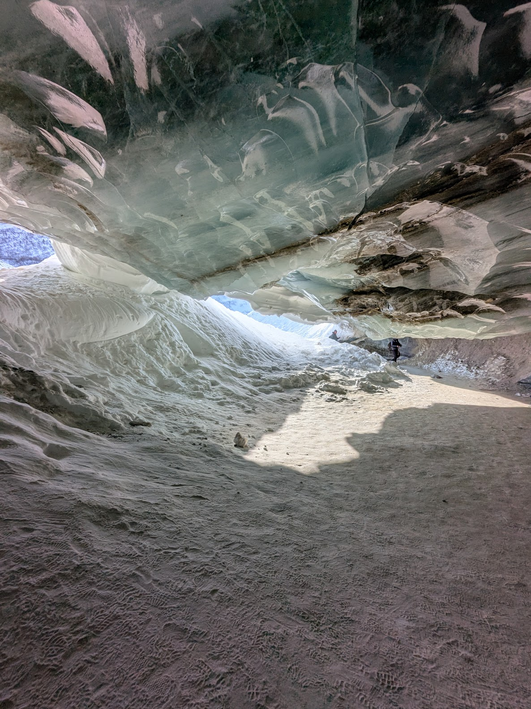
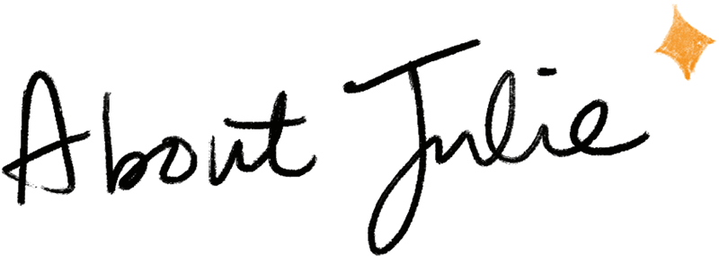

Exploring glaciers in Fairbanks, Alaska Biking the Shimanami Kaido, Japan
Biking the Shimanami Kaido, Japan
 Enjoying sunshine in Barcelona
Enjoying sunshine in Barcelona

I'm a Product Designer based in the SF Bay Area with 15+ years of experience
designing in fast-paced startup environments.
I'm happiest when I'm building something new, and especially love being part
of collaborative teams where there's always something to learn (and share).
When I'm not designing, you'll find me chasing some form of creativity, whether
that's watercolor painting, outdoor cycling, postcrossing, or pickleball. Art,
in particular, is my way of slowing down and finding a little quiet in the
everyday chaos.